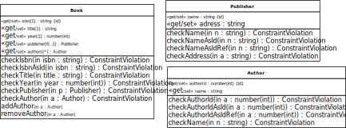

Understanding and Implementing Information Management Concepts and Techniques
JavaScript Front-End Web App Tutorial Part 4: Managing Unidirectional Associations
 Learn how to manage unidirectional associations between object types, such as the associations assigning publishers and authors to books
Learn how to manage unidirectional associations between object types, such as the associations assigning publishers and authors to books
Warning: This tutorial manuscript may still contain errors and may still be incomplete in certain respects. Please report any issue to Gerd Wagner at G.Wagner@b-tu.de.
This tutorial is also available in the following formats: PDF. You may run the example app from our server, or download it as a ZIP archive file. See also our Web Engineering project page.
Copyright © 2014-2022 Gerd Wagner
This tutorial article, along with any associated source code, is licensed under The Code Project Open License (CPOL), implying that the associated code is provided "as-is", can be modified to create derivative works, can be redistributed, and can be used in commercial applications, but the article must not be distributed or republished without the author's consent.
2022-05-18
Table of Contents
- Foreword
- 1. Reference Properties and Unidirectional Associations
- 1. References and Reference Properties
- 2. Referential Integrity
- 3. Modeling Reference Properties as Unidirectional Associations
- 4. Representing Unidirectional Associations as Reference Properties
- 5. Adding Directionality to a Non-Directed Association
- 6. Our Running Example
- 7. Eliminating Unidirectional Associations
- 8. Rendering Reference Properties in the User Interface
- 9. Quiz Questions
- 2. Unidirectional Functional Associations in Plain JS
- 3. Unidirectional Non-Functional Associations in Plain JS
List of Figures
- 1.1. A committee has a club member as chair expressed by the reference
property
chair - 1.2. An association end with a "dot"
- 1.3. Representing unidirectional associations as reference properties
- 1.4. A model of a non-directed association between Committee and ClubMember
- 1.5. Modeling a bidirectional association between Committee and ClubMember
- 1.6. The Publisher-Book information design model with a unidirectional association
- 1.7. The Publisher-Book-Author information design model with two unidirectional associations
- 1.8. Turning a functional association end into a reference property
- 1.9. Turning a non-functional association end into a multi-valued reference property
- 1.10. An OO class model for
PublisherandBook - 1.11. An OO class model for the classes Book, Publisher and Author
- 1.12. A multi-selection widget showing two associated authors
- 2.1. A JS class model defining the classes
BookandPublisher - 3.1. Two unidirectional associations between
MovieandPerson.
This tutorial is Part 4 of our series of six
tutorials about model-based development of front-end web
applications with plain JavaScript. It shows how to build a web app that
takes care of the three object types Book,
Publisher and Author as well as of two
unidirectional associations:
the association between the classes
BookandPublisherassigning a publisher to a book,the association between the classes
BookandAuthorassigning one or more authors to a book.
The app supports the four standard data management operations
(Create/Read/Update/Delete). It
extends the example app of part 2 by adding code for handling the
unidirectional functional (many-to-one)
association between Book and Publisher, and the
unidirectional non-functional
(many-to-many) association between Book and
Author. The other parts of the tutorial are:
Part 1: Building a minimal app.
Part 2: Handling constraint validation.
Part 3: Dealing with enumerations.
Part 5: Managing bidirectional associations, such as the associations between books and publishers and between books and authors, not only assigning authors and a publisher to a book, but also the other way around, assigning books to authors and to publishers.
Part 6: Handling subtype (inheritance) relationships between object types.
You may also want to take a look at our open access book Building Front-End Web Apps with Plain JavaScript, which includes all parts of the tutorial in one document, dealing with multiple object types ("books", "publishers" and "authors") and taking care of constraint validation, enumeration attributes, associations and subtypes/inheritance.
Table of Contents
- 1. References and Reference Properties
- 2. Referential Integrity
- 3. Modeling Reference Properties as Unidirectional Associations
- 4. Representing Unidirectional Associations as Reference Properties
- 5. Adding Directionality to a Non-Directed Association
- 6. Our Running Example
- 7. Eliminating Unidirectional Associations
- 8. Rendering Reference Properties in the User Interface
- 9. Quiz Questions
A property defined for an object type, or class, is called a reference
property if its values are references that reference an object of another, or
of the same, type. For instance, the class Committee shown in
Figure 1.1 below
has a reference property chair, the values of which are
references to objects of type ClubMember.
An association between object types classifies relationships between objects
of those types. For instance, the association Committee-has-ClubMember-as-chair, which is visualized as a connection line in
the class diagram shown in Figure 1.2 below, classifies the relationships FinanceCommittee-has-PeterMiller-as-chair, RecruitmentCommittee-has-SusanSmith-as-chair and AdvisoryCommittee-has-SarahAnderson-as-chair, where
the objects PeterMiller, SusanSmith and SarahAnderson are of type
ClubMember, and the objects FinanceCommittee, RecruitmentCommittee and AdvisoryCommittee are of type
Committee. An association as a set of relationships can be
represented as a table like so:
| Committee-has-ClubMember-as-chair | |
|---|---|
| Finance Committee | Peter Miller |
| Recruitment Committee | Susan Smith |
| Advisory Committee | Sarah Anderson |
Reference properties correspond to a special form of associations, namely to unidirectional binary associations. While a binary association does, in general, not need to be directional, a reference property represents a binary association that is directed from the property's domain class (where it is defined) to its range class.
In general, associations are relationship types with two or more object types participating in them. An association between two object types is called binary. In this tutorial we only discuss binary associations. For simplicity, we just say 'association' when we actually mean 'binary association'.
While individual relationships (such as FinanceCommittee-has-PeterMiller-as-chair) are important information items in business communication and in information systems, associations (such as Committee-has-ClubMember-as-chair) are important elements of information models. Consequently, software applications have to implement them in a proper way, typically as part of their model layer within a model-view-controller (MVC) architecture. Unfortunately, many application development frameworks lack the required support for dealing with associations.
In mathematics, associations have been formalized in an abstract way as sets of uniform tuples, called relations. In Entity-Relationship (ER) modeling, which is the classical information modeling approach in information systems and software engineering, objects are called entities, and associations are called relationship types. The Unified Modeling Language (UML) includes the UML Class Diagram language for information modeling. In UML, object types are called classes, relationship types are called associations, and individual relationships are called "links". These three terminologies are summarized in the following table:
| Our preferred term(s) | UML | ER Diagrams | Mathematics |
|---|---|---|---|
| object | object | entity | individual |
| object type (class) | class | entity type | unary relation |
| relationship | link | relationship | tuple |
| association (relationship type) | association | relationship type | relation |
| functional association | one-to-one, many-to-one or one-to-many relationship type | function |
We first discuss reference properties, which implicitly represent unidirectional binary associations in an "association-free" class model (a model without any explicit association element).
A reference can be either human-readable or an internal object reference. Human-readable references refer to identifiers that are used in human communication, such as the unique names of astronomical bodies, the ISBN of books and the employee numbers of the employees of a company. Internal object references refer to the computer memory addresses of OOP objects, thus providing an efficient mechanism for accessing objects in the main memory of a computer.
Some languages, like SQL and XML, only support human-readable, but
not internal references. In SQL, human-readable references are called
foreign keys, and the identifiers they
refer to are called primary keys. In
XML, human-readable references are called ID
references and the corresponding attribute type is
IDREF.
Objects in an OO program can be referenced either with the help of
human-readable references (such as integer codes) or with internal object
references, which are preferable for accessing objects efficiently in main
memory. Following the XML terminology, we call human-readable references
ID references. We follow the standard
naming convention for ID reference properties where an ID reference
property defined in a class A and referencing objects of
class B has the name b_id using the suffix
_id. When we store persistent objects in the form of records
or table rows, we need to convert internal object references, stored in
properties like publisher, to ID references, stored in
properties like publisher_id. This conversion is performed as
part of the serialization of the object by assigning the standard
identifier value of the referenced object to the ID reference property of
the referencing object.
In OO languages, a property is defined for an object type, or class,
which is its domain. The values of a
property are either data values from
some datatype, in which case the property is called an attribute, or they are object
references referencing an object from some class, in which case
the property is called a reference property. For instance, the class Committee shown in
Figure 1.1 below
has an attribute name with range String, and a
reference property chair with range
ClubMember.

Object-oriented programming languages, such as JavaScript, PHP, Java and C#, directly support the concept of reference properties, which are properties whose range is not a datatype but a reference type, or class, and whose values are object references to instances of that class.
By default, the multiplicity of a property is 1, which
means that the property is mandatory and functional (or,
in other words, single-valued), having
exactly
one value, like the property chair in
class Committee shown in Figure 1.1. When a
functional property is optional (not mandatory), it has the
multiplicity 0..1, which means that the property's minimum
cardinality is 0 and its maximum cardinality is 1.
A reference property can be either single-valued (functional) or
multi-valued (non-functional). For
instance, the reference property Committee::chair shown in
Figure 1.1 is
single-valued, since it assigns a unique club member as chair to a club.
An example of a multi-valued reference
property is provided by the property Book::authors shown in
Figure 1.11
below.
Normally, the collection value of a multi-valued reference property is a set of references, implying that the order of the references does not matter. In certain cases, however, the order matters and, consequently, the collection value of such a multi-valued reference property is an ordered set of references, typically implemented as a list. Only rarely, the collection value of a multi-valued reference property may be a, possibly ordered, multi-set (also called bag).
References are important information items in our application's
database. However, they are only meaningful, when their referential integrity is maintained by the app. This requires that for any
reference, there is a referenced object in the database. Consequently, any
reference property p with domain class C and
range class D comes with a referential integrity constraint that has to be
checked whenever
a new object of type
Cis created,the value of
pis changed for some object of typeC,an object of type
Dis destroyed.
A referential integrity constraint also implies two change dependencies:
An object creation dependency: an object with a reference to another object can only be created after the referenced object has been created.
An object destruction dependency: an object that is referenced by another object can only be destroyed after
the referencing object(s) is (are) destroyed first; this approach can be called the CASCADE deletion policy, or
the reference in the referencing object is either dropped (the DROP-REFERENCE deletion policy) or replaced by another reference.
For every reference property in our app's model classes, we have to choose, which of these two possible deletion policies applies.
In certain cases, we may want to relax this strict regime and allow creating objects that have non-referencing values for an ID reference property, but we do not consider such cases.
Typically, object creation dependencies are managed in the user interface by not allowing the user to enter a value of an ID reference property, but only to select one from a list of all existing target objects.
A reference property (such as chair in the example
shown in Figure 1.1 above) can be modeled in a UML class diagram
in the form of an association end owned by its domain class, which is visualized with the
help of a small filled circle (also called a "dot"). This requires to
connect the domain class and the range class of the reference property
with an association line, place an ownership
dot at the end of this line at the range class side, and
annotate this association end with the property name and with a
multiplicity symbol, as shown in Figure 1.2 below for the case of our example. In this way
we get a unidirectional
association, the source class of which is the
property's domain and the target class of
which is the property's range.
The fact that an association end is owned by the class at the other end, as visually
expressed by the association end ownership
dot at the association end chair in the example
shown in Figure 1.2 below, implies that the association end
represents a reference property. In the example of Figure 1.2, the
represented reference property is
Committee::chair having ClubMember
as range. Such an association, with only one association end ownership
dot, is unidirectional in the sense
that it allows `navigation´ (object access) in one direction only: from
the class at the opposite side of the dot (the source class) to the class where the dot is
placed (the target class).

Thus, the two diagrams shown in Figure 1.1 and Figure 1.2 express
essentially equivalent models. When a reference property, like
chair in Figure 1.1, is modeled by an association end with a
"dot", then the property's multiplicity is attached to the association
end. Since in a design model, all association ends need to have a
multiplicity, we also have to define a multiplicity for the other end at
the side of the Committee class, which represents the inverse
of the property. This multiplicity (of the inverse property) is not
available in the original property description in the model shown in Figure 1.1, so it has
to be added according to the intended semantics of the association. It can
be obtained by answering the question "is it mandatory that any
ClubMember is the chair of a
Committee?" for finding the minimum cardinality and the
question "can a ClubMember be the chair of more
than one Committee?" for finding the maximum
cardinality.
When the value of a property is a set of values from its range, the
property is non-functional and its multiplicity is
either 0..* or n..* where n > 0. Instead of
0..*, which means "neither mandatory nor functional", we can
simply write the asterisk symbol *. The association shown in
Figure 1.2 assigns
at most one object of type ClubMember as chair to an object
of type Committee. Consequently, it's an example of a
functional
association.
An overview about the different cases of functionality of an association is provided in the following table:
| Functionality type | Meaning |
|---|---|
| one-to-one | both functional and inverse functional |
| many-to-one | functional |
| one-to-many | inverse functional |
| many-to-many | neither functional nor inverse functional |
Notice that the directionality and the functionality type of an association are independent of each other. So, a unidirectional association can be either functional (one-to-one or many-to-one), or non-functional (one-to-many or many-to-many).
A unidirectional association between a source and a target class can be represented as a reference property of the source class. This is illustrated in Figure 1.3 below for two unidirectional associations: a many-to-one and a many-to-many association.


Notice that, in a way, we have eliminated the two explicit associations and replaced them with corresponding reference properties resulting in a class model that can be coded with a classical OOP language in a straightforward way. OOP languages do not support associations as first class citizens. They do not have a language element for defining associations. Consequently, an OOP class design model, which we call OO class model, must not contain any explicit association.
When we make an information model in the form of a UML class diagram, we typically end up with a model containing one or more associations that do not have any ownership defined for their ends, as, for instance, in Figure 1.4 below. When there is no ownership dot at either end of an association, such as in this example, this means that the model does not specify how the association is to be represented (or realized) with the help of reference properties. Such an association does not have any direction. According to the UML 2.5 specification, the ends of such an association are "owned" by itself, and not by any of the classes participating in it.

An information design model that contains an association without association end ownership dots is acceptable as a relational database design model, but it is incomplete as a design model for OOP languages.
For instance, the model of Figure 1.4 provides a relational database design with two
entity tables, committees and clubmembers, and a
separate one-to-one relationship table
committee_has_clubmember_as_chair. But it does not provide a
design for Java classes, since it does not specify how the association is
to be implemented with the help of reference properties.
There are three options how to turn an information design model of a non-directed association (without any association end ownership dots) into an information design model where all associations are either unidirectional or bidirectional: we can place an ownership dot at either end or at both ends of the association. Each of these three options defines a different way how to represent, or implement, the association with the help of reference properties. So, for the association shown in Figure 1.4 above, we have the following options:
Place an ownership dot at the
chairassociation end, leading to the model shown in Figure 1.2 above, which can be transformed into the OO class model shown in Figure 1.1 above.Place an ownership dot at the
chairedCommitteeassociation end, leading to the completed models shown in Figure 1.8 below.Make the association bidirectional by placing ownership dots at both association ends, as shown in Figure 1.5 with the meaning that the association is implemented in a redundant manner by a pair of mutually inverse reference properties
Committee::chairandClubMember::chairedCommittee, as discussed in the next part of our tutorial.

So, whenever we have modeled an association, we have to make a choice, which of its ends represents a reference property and will therefore be marked with an ownership dot. It can be either one, or both. This decision also implies a decision about the navigability of the association. When an association end represents a reference property, this implies that it is navigable (via this property).
In the case of a functional association that is not one-to-one, the
simplest design is obtained by defining the direction of the association
according to its functionality, placing the association end ownership dot
at the association end with the multiplicity 0..1 or
1. For a non-directed one-to-one or many-to-many association,
we can choose the direction as we like, that is, we can place the
ownership dot at either association end.
The model shown in Figure 1.6 below (about publishers and books) serves as our running example for a unidirectional functional association. Notice that it contains the unidirectional many-to-one association Book-has-Publisher.

We may also have to deal with a multi-valued reference property
representing a unidirectional non-functional association. For instance,
the unidirectional many-to-many association between Book and
Author shown in Figure 1.7 below, models a multi-valued reference
property authors.
Since classical OO programming languages do not support associations as first class citizens, but only classes and reference properties representing unidirectional associations, we have to eliminate all explicit associations from general information design models for obtaining OO class models.
The starting point of our restricted association elimination procedure is an information design model with various kinds of unidirectional associations, such as the model shown in Figure 1.6 above. If the model still contains any non-directional associations, we first have to turn them into directional ones by making a decision on the ownership of their ends, as discussed in Section 5.
A unidirectional association connecting a source with a target class is replaced with a corresponding reference property in its source class having
the same name as the association end, if there is any, otherwise it is set to the name of the target class (possibly pluralized, if the reference property is multi-valued);
the target class as its range;
the same multiplicity as the target association end,
a uniqueness constraint if the unidirectional association is inverse functional.
This replacement procedure is illustrated for the case of a
unidirectional one-to-one association in Figure 1.8 below, where
the uniqueness constraint of the reference property
chairedCommittee is expressed by the {key}
property modifier.


For the case of a unidirectional one-to-many association, Figure 1.9 below provides an
illustration of the association elimination procedure. Here, the
non-functional association end at the target class Point is
turned into a corresponding reference property with name
points obtained as the pluralized form of the target class
name.

In the case of our running example, the Publisher-Book-Author
information design model, we have to replace both unidirectional
associations with suitable reference properties. In the first step, we
replace the many-to-one association Book-has-Publisher
in the model of Figure 1.6 with a functional reference property
publisher in the class Book, resulting in the
OO class model shown in Figure 1.10.

Notice that since the target association end of the Book-has-Publisher
association has the multiplicity 0..1, we have to declare
the new property publisher as optional by defining its
multiplicity to be 0..1.
The meaning of this OO class model and its reference property
publisher can be illustrated by a sample data population
for the two model classes Book and Publisher
as presented in the following tables:
| Publisher | |
|---|---|
| Name | Address |
| Bantam Books | New York, USA |
| Basic Books | New York, USA |
| Book | |||
|---|---|---|---|
| ISBN | Title | Year | Publisher |
| 0553345842 | The Mind's I | 1982 | Bantam Books |
| 1463794762 | The Critique of Pure Reason | 2011 | |
| 1928565379 | The Critique of Practical Reason | 2009 | |
| 0465030793 | I Am A Strange Loop | 2000 | Basic Books |
Notice that the values of the "Publisher" column of the Book table are unique names that reference a
row of the Publisher table. The
"Publisher" column may not have a value for certain rows due to the fact
that the corresponding reference property publisher is
optional.
In the second step, we replace the many-to-many association
Book-has-Author in
the model of Figure 1.7 with a multi-valued reference property
authors in the class Book, resulting in the OO
class model shown in Figure 1.11.
The meaning of this OO class model and its reference properties
Book::publisher and
Book::authors can be illustrated by sample
data populations for the three model classes:
| Publisher | |
|---|---|
| Name | Address |
| Bantam Books | New York, USA |
| Basic Books | New York, USA |
| Book | ||||
|---|---|---|---|---|
| ISBN | Title | Year | Authors | Publisher |
| 0553345842 | The Mind's I | 1982 | 1, 2 | Bantam Books |
| 1463794762 | The Critique of Pure Reason | 2011 | 3 | |
| 1928565379 | The Critique of Practical Reason | 2009 | 3 | |
| 0465030793 | I Am A Strange Loop | 2000 | 2 | Basic Books |
| Author | |
|---|---|
| Author ID | Name |
| 1 | Daniel Dennett |
| 2 | Douglas Hofstadter |
| 3 | Immanuel Kant |
After the platform-independent OO class model has been completed, one or more platform-specific implementation models, for a choice of specific implementation platforms, can be derived from it. Examples of types of platform-specific implementation models are JS class models, Java Entity class models and SQL table models.
A platform-specific implementation model can still be expressed in the form of a UML class diagram, but it contains only modeling elements that can be directly coded in the chosen platform. Thus, for any platform considered, two guidelines are needed: 1) how to make the platform-specific implementation model, and 2) how to code this model.
The widgets used for data input and output in a (CRUD) data
management user interface (UI) normally correspond to properties defined
in a model class of an app. We have to distinguish between (various types
of) input fields corresponding to
(various kinds of) attributes, and
choice widgets (such as selection lists) corresponding to enumeration attributes or to reference properties. Representing reference
properties in the UI with select controls, instead of
input fields, prevents the user from entering invalid ID
references, so it takes care of referential
integrity.
In general, a single-valued reference property can be rendered as a single-selection list in the UI, no matter how many objects populate the reference property's range, from which one specific choice is to be made. If the cardinality of the reference property's range is sufficiently small (say, not greater than 7), then we can also use a radio button group instead of a selection list.
A multi-valued
reference property can be rendered as a multiple-selection list in the UI.
However, the corresponding multiple-select control of HTML is
not really usable as soon as there are many (say, more than 20) different
options to choose from because the way it renders the choice is visually
too scattered. In the special case of having only a few (say, no more than
7) options, we can also use a checkbox group instead of a
multiple-selection list. But for the general case of having in the UI a
list containing all associated objects chosen from the reference
property's range class, we need to develop a special UI widget that allows
to add (and remove) objects to (and from) a list of chosen objects.
Such a multi-selection widget consists of
an HTML list element containing the selected (associated) objects, where each list item has a push button for removing the object from the selection;
a single-
selectcontrol that, in combination with a push button, allows to add a new associated object from the range class of the multi-valued reference property.
If you would like to look up the answers for the following quiz questions, you can check our discussion forum. If you don't find an answer in the forum, you may create a post asking for an answer to a particular question.
What does it mean to say that an association is "one-to-one"? It means that it is (select one):
O Bidirectional
O Both functional and total
O Functional
O Both functional and inverse functional
A referential integrity constraint for a reference property p with domain class C and range class D has to be checked whenever (select one or many):
☐ An object of type C is destroyed.
☐ The value of p is changed for some object of type C.
☐ A new object of type C is created.
☐ An object of type D is destroyed.
☐ A new object of type D is created.
A unidirectional binary association is functional if and only if (select one):
O Each object of the source class is linked to at most one object of the target class.
O Each object of the target class is linked to at most one object of the source class.
O Each object of the source class is linked to at least one object of the target class.
O Each object of the source class is linked to exactly one object of the target class.
Assume that we have an object type B with a standard
identifier attribute id and an object type A
with an ID reference attribute b_id referencing
B::id. Further, assume that there is an object
b of type B with b.id = 11 and an
object a of type A referencing b
with a.b_id = 11. Which of the following statements are
correct? Select one or many:
☐ The object
bcan be destroyed when the ID reference in objectais unassigned (by settinga.b_idtoundefinedin JS or tonullin Java) and there is no other object that referencesb.☐ The object
acan only be destroyed whenbhas been destroyed before.☐ The object
bcan be destroyed when the ID reference in objectais reset to another object of typeB, e.g. by settinga.b_id = 7and there is no other object that referencesb.☐ The object
bcan be destroyed whenahas been destroyed before.
Which of the following statements about a single-valued reference property p and how it should be rendered in a web user interface by a suitable form control are correct? Select one or many:
☐ An adequate rendering is obtained by using an
inputcontrol withtype="text".☐ If the cardinality of p's range is not greater than 7, it can be rendered by a check button group.
☐ If the cardinality of p's range is not greater than 7, it can be rendered by a radio button group.
☐ It can always be rendered by a single-
selectcontrol.
Table of Contents
The three example apps that we have discussed in previous parts of this tutorial, the minimal app, the validation app, and the enumeration app, have been limited to managing the data of one object type only. A real app, however, has to manage the data of several object types, which are typically related to each other in various ways. In particular, there may be associations and subtype (inheritance) relationships between object types. Handling associations and subtype relationships are advanced issues in software application engineering. They are often not sufficiently discussed in text books and not well supported by application development frameworks.
A unidirectional functional association is either one-to-one or many-to-one. In both cases such an association is represented, or implemented, with the help of a single-valued reference property.
In this chapter, we show
how to derive a plain JS class model from an OO class model with single-valued reference properties representing unidirectional functional associations,
how to code the JS class model in the form of plain JavaScript model classes,
how to write the view and controller code based on the model code.
When coding a class, the ES2015 feature of function parameter destructuring allows using a single constructor parameter that is a record with a simplified syntax for defining its fields. We make use of this new feature for obtaining a simplified class definition syntax illustrated by the following example:
class Book {
constructor ({isbn, title, year, ...}) {
this.isbn = isbn;
this.title = title;
this.year = year;
...
}
...
}A single-valued reference property, such as the property
publisher of the object type Book, allows
storing internal references to objects of another type, such as
Publisher. When creating a new object, the constructor
function needs to have a parameter for allowing to assign a suitable value
to the reference property. In a typed programming language, such as Java,
we would have to take a decision if this value is expected to be an
(internal) object reference or an (external) ID reference. In JavaScript,
however, we can take a more flexible approach and allow using either of
them, as shown in the following example:
class Book {
constructor ({isbn, title, year,
publisher, publisher_id}) {
...
// assign object reference or ID reference
if (publisher || publisher_id) {
this.publisher = publisher || publisher_id;
}
...
}
...
}Notice that the record parameter's publisher field
represents a JS object reference while its publisher_id field
represents an ID reference. In JavaScript, we can use a disjunctive
expression like expr1 || expr2 for getting the value of the
first expression, if it is defined (and not 0), or else the value of the
second expression. We handle the resulting ambiguity in the property
setter by checking the type of the argument as shown in the following code
fragment:
set publisher(p) {
var publisher_id = "";
// p can be an ID reference or an object reference
publisher_id = (typeof p !== "object") ? p : p.name;
...
this._publisher = Publisher.instances[ publisher_id];
...
}Notice that the name of a publisher is used as an ID
reference, since it is the standard ID of the Publisher
class.
The starting point for making a JS class model is an OO class model like the one shown in Figure 1.10.
We now show how to derive a JS class model from this OO class model in four steps. For each class in the OO class model:
Add a «get/set» stereotype to all (non-derived) single-valued properties, implying that they have implicit getters and setters. Recall that in the setter, the corresponding check operation is invoked and the property is only set, if the check does not detect any constraint violation.
Create a check operation for each (non-derived) property in order to have a central place for implementing property constraints. For a standard ID attribute (such as
Book::isbn), two or three check operations are needed:A basic check operation, like
checkIsbn, for checking all syntactic constraints, but not the mandatory value and the uniqueness constraints.A standard ID check operation, like
checkIsbnAsId, for checking the mandatory value and uniqueness constraints that are implied by a standard ID attribute.If other classes have a reference property that references the class under consideration, add an ID reference check operation for checking the referential integrity constraint imposed on ID reference (or foreign key) attributes. For instance, since the
Book::publisherproperty referencesPublisherobjects, we need acheckNameAsIdRefoperation in thePublisherclass.
For a reference property, such as
Book::publisher, the check operation,Book.checkPublisher, has to check the implied referential integrity constraint by invokingPublisher.checkNameAsIdRef, and possibly also a mandatory value constraint, if the property is mandatory.
This leads to the following JS class model for Book,
where the class-level ('static') methods are shown underlined:
 |
|
We have to perform a similar transformation also for the class
Publisher. This gives us the complete JS class model derived
from the above OO class model, as depicted in the following class
diagram.
Compared to the validation and enumeration apps discussed in Part 2 and Part 3 of our tutorial , we have to deal with a number of new technical issues:
In the model code we now have to take care of reference properties that require
maintaining referential integrity;
choosing and implementing one of the two possible deletion policies discussed in Section 2 for managing the corresponding object destruction dependency in the
destroymethod of the property's range class;conversion between internal object references and external ID references in the serialization functions
toString()andtoJSON(), as well as in the constructor function.
In the user interface ("view") code we now have to take care of
showing information about associated objects in the Retrieve/List use case;
allowing to select an object from a list of all existing instances of the association's target class and add it to, or remove an object from, a list of associated objects, in the Create and Update use cases.
The JS class model can be directly coded for getting the JS model classes of our app.
Code each class of the JS class model as a JS class with implicit getters and setters:
Code the property check functions in the form of class-level ('static') methods. Take care that all constraints of a property as specified in the JS class model are properly coded in the property checks.
For each single-valued property, code the specified get and set methods such that in each setter, the corresponding property check is invoked and the property is only set/unset, if the check does not detect any constraint violation.
Write the code of the serialization functions
toString()andtoJSON().Take care of deletion dependencies in the
destroymethod.
These steps are discussed in more detail in the following sections.
Each class C of the JS class model is coded as a JS
class with the same name C and a constructor having a
single record parameter, which specifies a field for each (non-derived)
property of the class. The range of these properties can be indicated in
a comment. In the case of a reference property the range is another
model class.
In the constructor body, we assign the fields of the record parameter to corresponding properties. These property assignments invoke the corresponding setter methods.
For instance, the Publisher class from the JS class
model is coded in the following way:
class Publisher {
constructor ({name, address}) {
this.name = name; // string
this.address = address; // string
}
...
};Since the setters may throw constraint violation exceptions, the constructor function, and any setter, should be called in a try-catch block where the catch clause takes care of logging suitable error messages.
For each model class C, we define a class-level
property C.instances representing the collection of all
C instances managed by the application in the form of an
entity table (a map of records). This property is initially set to an
empty map {}. For instance, in the case of the model class
Publisher, we define:
Publisher.instances = {};The Book class from the JS class model is coded in a
similar way:
class Book {
constructor ({isbn, title, year, authors, authorIdRefs,
publisher, publisher_id}) {
this.isbn = isbn; // string
this.title = title; // string
this.year = year; // integer
this.authors = authors || authorIdRefs; // Array
if (publisher || publisher_id) {
this.publisher = publisher || publisher_id; // ref|string
}
}
...
}Notice that the Book constructor can be invoked
either with object references authors and
publisher or with ID references authorIdRefs
and publisher_id (the type hint "ref|string" means that the
property's range is either an object reference or a string). This
approach makes using the Book constructor more flexible and
more robust.
Take care that all constraints of a property as specified in the
JS class model are properly coded in its check function, as explained in
Part
2 of tour tutorial . Recall that
constraint violation (or validation error) classes are defined in the
module file lib/errorTypes.mjs.
For instance, for the Publisher.checkName function we
obtain the following code:
class Publisher { ... static checkName(n) { if (n === undefined) { return new NoConstraintViolation(); // not mandatory } else { if (typeof n !== "string" || n.trim() === "") { return new RangeConstraintViolation( "The name must be a non-empty string!"); } else { return new NoConstraintViolation(); } } } static checkNameAsId(n) {...} ... }
Notice that, since the name attribute is the standard
ID attribute of Publisher, we only check syntactic
constraints in checkName, and check the mandatory value and
uniqueness constraints in checkNameAsId, which invokes
checkName:
static checkNameAsId( n) {
var validationResult = Publisher.checkName(n);
if ((validationResult instanceof NoConstraintViolation)) {
if (!n) {
return new MandatoryValueConstraintViolation(
"A publisher name is required!");
} else if (Publisher.instances[n]) {
return UniquenessConstraintViolation(
"There is already a publisher record with this name!");
}
}
return validationResult;
}If we have to deal with ID references (foreign keys) in other
classes, we need to provide a further check function, called
checkNameAsIdRef, for checking the referential integrity
constraint:
static checkNameAsIdRef(n) {
var validationResult = Publisher.checkName(n);
if ((validationResult instanceof NoConstraintViolation) &&
n !== undefined) {
if (!Publisher.instances[n]) {
validationResult = new ReferentialIntegrityConstraintViolation(
"There is no publisher record with this name!");
}
}
return validationResult;
}The condition !Publisher.instances[n] checks if there
is no publisher object with the given name n, and then
creates a validationResult object as an instance of the
exception class ReferentialIntegrityConstraintViolation. The
Publisher.checkNameAsIdRef function is called by the
Book.checkPublisher function:
class Book { ... static checkPublisher( publisher_id) { var validationResult = null; if (publisher_id === undefined || publisher_id === "") { validationResult = new NoConstraintViolation(); // optional } else { // invoke foreign key constraint check validationResult = Publisher.checkNameAsIdRef( publisher_id); } return validationResult; } ... }
In the setters, the corresponding check function is called and the
property is only set, if the check does not detect any constraint
violation. In the case of a reference property, we allow invoking the
setter either with an object reference or with an ID reference. The
resulting ambiguity is resolved by testing if the argument provided in
the invocation of the setter is an object or not. For instance, the
publisher setter is coded in the following way:
class Book { ... set publisher( p) { if (!p) { // unset publisher delete this._publisher; } else { // p can be an ID reference or an object reference const publisher_id = (typeof p !== "object") ? p : p.name; const validationResult = Book.checkPublisher( publisher_id); if (validationResult instanceof NoConstraintViolation) { // create the new publisher reference this._publisher = Publisher.instances[ publisher_id]; } else { throw validationResult; } } } ... }
For any reference property, we have to choose and implement one of
the two possible deletion policies discussed in Section 2
for managing the corresponding object destruction dependency in the
destroy method of the property's range class. In our case,
when deleting a record of a publisher p, we have to
choose between
deleting all records of books published by p (Existential Dependency);
dropping the reference to p from all books published by p (Existential Independence).
Assuming that books do not existentially depend on their
publishers, we choose the second option. This is shown in the following
code of the Publisher.destroy method where for all
concerned book objects the property
book.publisher is cleared (by deleting its property-value
slot):
Publisher.destroy = function (name) { // delete all references to this publisher in book objects for (const key of Object.keys( Book.instances)) { const book = Book.instances[key]; if (book.publisher.name === name) { delete book._publisher; // delete the proporty-value slot } } // delete the publisher object delete Publisher.instances[name]; console.log(`Publisher ${name} deleted.`); };
Notice that the deletion of all references to the deleted publisher is performed in a sequential scan through all book objects, which may be inefficient when there are many of them. It would be much more efficient when each publisher object would hold a list of references to all books published by this publisher. Creating and maintaining such a list would make the association between books and their publisher bidirectional.
In the case of a reference property, like
Book::publisher, the serialization function
Book::toString() has to show a human-readable identifier of
the referenced object, like this.publisher.name:
toString() { var bookStr = `Book{ ISBN: ${this.isbn}, title: ${this.title},` + `year: ${this.year}`; if (this.publisher) bookStr += `, publisher: ${this.publisher.name}`; return `${bookStr}, authors: ${Object.keys( this.authors).join(",")} }`; }
The object-to-storage conversion function
Book::toJSON(), which is automatically invoked by the
built-in JSON.stringify function, converts typed JS objects with object
references to corresponding (untyped) record objects with ID references.
This includes deleting the underscore prefix for obtaining the
corresponding record field name:
toJSON() { var rec = {}; for (const p of Object.keys( this)) { // copy only property slots with underscore prefix if (p.charAt(0) !== "_") continue; switch (p) { case "_publisher": // convert object reference to ID reference if (this._publisher) rec.publisher_id = this._publisher.name; break; default: // remove underscore prefix rec[p.substr(1)] = this[p]; } } return rec; }
The inverse conversion, from untyped record objects with ID
references to corresponding typed objects with object references, is
performed by the Book constructor, which tolerates both ID
references and object references as arguments for setting reference
properties.
The user interface (UI) consists of a start page
index.html that allows navigating to data management
UI pages, one for each object type (in our example,
books.html and publishers.html),
and one data management UI code file for each object type (in our example,
books.mjs and publishers.mjs).
Each data management UI page contains 5 sections: a Manage section, like Manage books, with a menu for choosing a CRUD use
case, and a section for each CRUD use case, like Retrieve/list all books, Create book, Update
book and Delete book, such
that only one of them is displayed at any time (by setting the CSS
property display:none for all others).
Each UI code file for managing the data of an object type O has the following parts (code blocks):
Import classes, datatypes and utility procedures.
Load the required data from the database.
Set up a few general, use-case-independent UI elements.
Retrieve O: add an event listener for the menu item Retrieve all in the Manage UI for creating, and activating, the table view in the Retrieve UI.
Create O: add event listeners
for the menu item Create in the Manage UI for populating the Create UI's choice widgets,
for responsive constraint validation per input field,
for the Save button for creating a new O record.
Update O: add event listeners
for the menu item Update in the Manage UI for populating the Update UI's
selectelement, which allows selecting the O record to be updated,for O selection events (more precisely, for
changeevents of theselectfield) for filling out the Update UI's fields with the property values of the selected O,for responsive constraint validation per input field,
for the Save button for updating an existing O record.
Delete O: add event listeners
for the menu item Delete in the Manage UI for populating the Update UI's
selectelement, which allows selecting the O record to be updated,for O selection events (more precisely, for
changeevents of theselectfield) for filling out the Delete UI's fields with the property values of the selected O,for the Delete button for deleting an existing O record.
For instance, in books.mjs, for managing book
data, we have the following first three code blocks:
Import classes, datatypes and utility procedures:
import Author from "../m/Author.mjs"; import Publisher from "../m/Publisher.mjs"; import Book from "../m/Book.mjs"; import { fillSelectWithOptions, createListFromMap, createMultipleChoiceWidget } from "../../lib/util.mjs";Load data:
Author.retrieveAll(); Publisher.retrieveAll(); Book.retrieveAll();
Set up general, use-case-independent UI elements:
// set up back-to-menu buttons for all CRUD UIs for (const btn of document.querySelectorAll("button.back-to-menu")) { btn.addEventListener("click", refreshManageDataUI); } // neutralize the submit event for all CRUD UIs for (const frm of document.querySelectorAll("section > form")) { frm.addEventListener("submit", function (e) { e.preventDefault(); frm.reset(); }); } // save data when leaving the page window.addEventListener("beforeunload", Book.saveAll);
In books.html, there is the following menu for
choosing a CRUD operation:
<section id="Book-M" class="UI-Page"> <h1>Manage book data</h1> <ul class="menu"> <li><button type="button" id="RetrieveAndListAll">Retrieve/list all book records</button></li> <li><button type="button" id="Create">Create a new book record</button></li> <li><button type="button" id="Update">Update a book record</button></li> <li><button type="button" id="Delete">Delete a book record</button></li> </ul> <div class="button"><a href="index.html">Back to Main menu</a></div> </section>
For each of these CRUD buttons we add an event listener that takes
care of setting up the corresponding UI. For instance, for "Retrieve/list
all", we have the following code in books.mjs:
document.getElementById("RetrieveAndListAll")
.addEventListener("click", function () {
document.getElementById("Book-M").style.display = "none";
document.getElementById("Book-R").style.display = "block";
... // set up the UI for Retrieve/list all
});In our example, we have only one reference property,
Book::publisher, which is functional and optional. For
showing information about the publisher of a book in the view table of
the Retrieve/list all user interface,
the corresponding cell in the HTML table is filled with the name of the
publisher, if there is any (in books.mjs):
const tableBodyEl = document.
querySelector("section#Book-R > table > tbody");
tableBodyEl.innerHTML = ""; // drop old content
for (const key of Object.keys( Book.instances)) {
const book = Book.instances[key];
const row = tableBodyEl.insertRow();
row.insertCell().textContent = book.isbn;
row.insertCell().textContent = book.title;
row.insertCell().textContent = book.year;
// if the book has a publisher, show its name
row.insertCell().textContent =
book.publisher ? book.publisher.name : "";
}For a multi-valued reference property, the table cell would have to be filled with a list of all associated objects referenced by the property.
For allowing to select associated objects in the Create and Update user interfaces, a selection list (i.e.,
a HTML select element) is populated with
option elements formed from the instances of the associated
object type with the help of a utility method
fillSelectWithOptions. The select element is
defined in the books.html view file:
<section id="Book-C" class="UI-Page">
<h1>Public Library: Create a new book record</h1>
<form>
...
<div class="select-one">
<label>Publisher: <select name="selectPublisher"></select></label>
</div>
...
</form>
</section>The Create UI is set up by
populating a selection list for selecting the publisher with the help of
a utility method fillSelectWithOptions as shown in the
following program listing:
const createFormEl = document.querySelector("section#Book-C > form");
const selectPublisherEl = createFormEl.selectPublisher;
document.getElementById("Create").addEventListener("click", function () {
document.getElementById("Book-M").style.display = "none";
document.getElementById("Book-C").style.display = "block";
// set up a single selection list for selecting a publisher
fillSelectWithOptions( selectPublisherEl, Publisher.instances, "name");
createFormEl.reset();
});
// set up event handlers for responsive constraint validation
...
// handle Save button click events
createFormEl["commit"].addEventListener("click", function () {
...
});When the user pushes the Save
button, all form control values, including the value of the
select field, are copied to a slots record,
which is used as the argument for invoking the add method
after all form fields have been checked for validity, as shown in the
following program listing:
// handle Save button click events
createFormEl["commit"].addEventListener("click", function () {
const slots = {
isbn: createFormEl.isbn.value,
title: createFormEl.title.value,
year: createFormEl.year.value,
publisher_id: createFormEl.selectPublisher.value
};
// check all input fields and show error messages
createFormEl.isbn.setCustomValidity(
Book.checkIsbnAsId( slots.isbn).message);
// save the input data only if all form fields are valid
if (createFormEl.checkValidity()) {
Book.add( slots);
}
});The code for setting up the Update user interface is similar.
Consider the single-valued reference property
Committee::chair, which holds a reference to
an instance of the class ClubMember. Which of the following
JS code fragments represents the preferred implementation of the setter
for this property? Select one:
O
set chair(c) { const clubMember_id = (typeof c !== "object") ? c : c.memberId; this._chair = ClubMember.instances[clubMember_id]; }O
set chair(c) { const clubMember_id = c.memberId; this._chair = ClubMember.instances[clubMember_id]; }O
set chair(c) { const clubMember_id = c; this._chair = ClubMember.instances[clubMember_id]; }O
set chair(c) { this._chair = c; }
Making the assumption that books existentially depend on their
publishers, implying a CASCADE deletion policy, which of the following
Publisher.destroy methods correctly implements the implied
deletion policy? Select one:
O
Publisher.destroy = function (name) { for (const key of Object.keys( Book.instances)) { const book = Book.instances[key]; if (book.publisher.name === name) { delete book._publisher; } } delete Publisher.instances[name]; };O
Publisher.destroy = function (name) { for (const key of Object.keys( Book.instances)) { const book = Book.instances[key]; if (book.publisher.name === name) { delete Book.instances[key]; } } delete Publisher.instances[name]; };O
Publisher.destroy = function (name) { for (const key of Object.keys( Book.instances)) { const book = Book.instances[key]; if (book.publisher.name === name) { book.publisher = undefined; } } delete Publisher.instances[name]; };


Table of Contents
A unidirectional non-functional association is either one-to-many or many-to-many. In both cases such an association is represented, or implemented, with the help of a multi-valued reference property.
In this chapter, we show
how to derive a JS class model from an OO class model with multi-valued reference properties representing unidirectional non-functional associations,
how to code the JS class model in the form of JavaScript model classes,
how to write the view and controller code based on the model code.
A multi-valued reference property, such as the property
Book::authors, allows storing a collection of
references to objects of some type, such as Author objects.
When creating a new object of type Book, the constructor
function needs to have a parameter for providing a suitable value for this
property. We can allow this value to be either a collection of internal
object references or of ID references, as shown in the following
example:
class Book {
constructor ({isbn, title, year, authors, authorIdRefs,
publisher, publisher_id}) {
this.isbn = isbn;
this.title = title;
this.year = year;
// assign object reference or ID reference
this.authors = authors || authorIdRefs;
if (publisher || publisher_id) {
this.publisher = publisher || publisher_id;
}
}
...
}Notice that the constructor's parameter record is expected to
contain either an authors or an authorIdRefs
slot. The JavaScript expression authors||authorIdRefs, using
the disjunction operator ||, evaluates to a map
authors, if there is a slot with name authors,
or to an array authorIdRefs, otherwise. We handle the
resulting ambiguity in the property setter by checking the type of the
argument as shown in the following code fragment:
set authors( a) { this._authors = {}; if (Array.isArray(a)) { // array of IdRefs for (const idRef of a) { this.addAuthor( idRef); } } else { // map of IdRefs to object references for (const idRef of Object.keys( a)) { this.addAuthor( a[idRef]); } } }
In JS, a collection-valued reference property can be implemented in two ways:
having an array list (a JS array) of object references as its value,
having a map as its value, such that the values of the object's standard ID attribute are the keys, which are mapped to internal JS object references.
We prefer using maps for implementing set-valued reference properties since they
guarantee that each element is unique, while with an array we would have
to prevent duplicate elements. Also, an element of a map can be easily
deleted (with the help of the delete operator), while this
requires more effort in the case of an array. However, for implementing
ordered or non-unique association ends corresponding to
ordered-collection-valued or
multi-set-valued (or bag-valued)
reference properties, we use JS arrays.
Our starting point for making a JS class model is the following OO class model:
 |
This model contains, in addition to the single-valued reference
property Book::publisher representing the
unidirectional many-to-one association Book-has-Publisher,
the multi-valued reference property
Book::authors representing the unidirectional
many-to-many association Books-have-Authors.
For deriving a JS class model from the OO class model we have to
follow the same steps as in Section 2 and, in addition, we have to take care of
multi-valued reference properties, such as
Book::authors, for which we
create a class-level check operation, such as
checkAuthor, which is responsible for checking the corresponding referential integrity constraint for the references to be added to the property's collection;create an add operation, such as
addAuthor, for adding a reference to the collection;create a remove operation, such as
removeAuthor, for removing a reference from the collection.
This leads to the following JS class model:
|  |
Compared to dealing with a functional association, as discussed in the previous chapter, we now have to deal with the following new technical issues:
In the model code we now have to take care of multi-valued reference properties that require implementing
an add and a remove method, such as
addAuthorandremoveAuthor, as well as a setter method for assigning a set of object references with the help of the add method, possibly converting ID references to object references; all three methods may need to check cardinality constraints, if there are any;a class-level check operation, such as
checkAuthor, which has to invoke the corresponding check...AsIdRef method of the property's range class for checking the property's implicit referential integrity constraint;converting a collection of object references to a collection of ID references in the object-to-storage conversion function
toJSON.
In the user interface ("view") code we now have to take care of
showing information about a set of associated objects in the property's column of the table view of the Retrieve/list all use case; the simplest approach is showing a comma-separated list of ID references, possibly combined with corresponding names; alternatively, HTML lists can be rendered in the property's table data cells;
allowing to select a set of associated objects from a list of all existing instances of the property's range class in the Create and Update use cases.
The last issue, allowing to select a set of associated objects from a list of all instances of some class, can, in general, not be solved with the help of an HTML multiple-
selectform control because of its poor usability. Whenever the set of selectable options is greater than a certain threshold (defined by the number of options that can be seen on the screen without scrolling), the multiple-selectelement is no longer usable, and an alternative multi-selection widget has to be used.
Notice that, for simplicity, we do not include the code for all constraint validation checks shown in the JS class model in the code of the example app.
Code each class of the JS class model as an ES6 class with implicit getters and setters:
Code the property checks in the form of class-level ('static') methods. Take care that all constraints of a property as specified in the JS class model are properly coded in the property checks.
For each single-valued property, code the specified getter and setter such that in each setter, the corresponding property check is invoked and the property is only set/unset, if the check does not detect any constraint violation.
For each multi-valued property, code its add and remove operations, as well as the specified get/set operations:
Code the add/remove operations as (instance-level) methods that invoke the corresponding property checks.
Code the setter such that it invokes the add operation for each item of the collection to be assigned.
Write the code of the serialization functions
toString()andtoJSON().Take care of deletion dependencies in the
destroymethod.
These steps are discussed in more detail in the following sections.
For the multi-valued reference property
Book::authors, we need to code the operations
addAuthor and removeAuthor. Both operations
accept one parameter denoting an author either by ID reference (the
author ID as integer or string) or by an object reference. The code of
addAuthor is as follows:
addAuthor( a) {
// a can be an ID reference or an object reference
const author_id = (typeof a !== "object") ? parseInt( a) : a.authorId;
const validationResult = Book.checkAuthor( author_id);
if (validationResult instanceof NoConstraintViolation) {
// add the new author reference
const key = String( author_id);
this._authors[key] = Author.instances[key];
} else {
throw validationResult;
}
}In the removeAuthor method, the author reference is
first checked and, if no constraint violation is detected, the
corresponding entry in the map this._authors is
deleted:
removeAuthor( a) { // a can be an ID reference or an object reference const author_id = (typeof a !== "object") ? parseInt( a) : a.authorId; const validationResult = Book.checkAuthor( author_id); if (validationResult instanceof NoConstraintViolation) { // delete the author reference delete this._authors[author_id]; } else { throw validationResult; } }
For assigning an array of ID references, or a map of object
references, to the property Book::authors, the
setter for the authors property adds them one by one with
the help of addAuthor:
set authors( a) { this._authors = {}; if (Array.isArray(a)) { // array of IdRefs for (let idRef of a) { this.addAuthor( idRef); } } else { // map of IdRefs to object references for (let idRef of Object.keys( a)) { this.addAuthor( a[idRef]); } } }
For the reference property
Book::authors, we have to choose and implement
a deletion policy in the destroy method of the
Author class. We have to choose between
deleting all books (co-)authored by the deleted author (reflecting the logic of Existential Dependency);
dropping from all books (co-)authored by the deleted author the reference to the deleted author (reflecting the logic of Existential Independence).
For simplicity, we go for the second option. This is shown in the
following code of the static Author.destroy method where
for all concerned book objects the author reference
book.authors[authorId] is dropped:
Author.destroy = function (authorId) { const author = Author.instances[authorId]; // delete all dependent book records for (const isbn of Object.keys( Book.instances)) { const book = Book.instances[isbn]; if (book.authors[authorId]) delete book.authors[authorId]; } // delete the author object delete Author.instances[authorId]; console.log("Author " + author.name + " deleted."); };
We need two serialization functions:
toString()for converting an object to a human-readable string representation that can be used for showing an object in a user interface, andtoJSON()for converting a typed object to a corresponding record that can be saved in a persistent datastore.
In both cases, internal object references are converted to ID references.
The Book::toString() function creates a
string representation that typically contains the relevant properties
only. The simplest method for showing a set of associated objects, like
the authors of a book, is creating a comma-separated list of IDs with
Object.keys( this.authors).join(",") as in the following
program listing:
toString() {
var bookStr = `Book{ ISBN: ${this.isbn}, title: ${this.title},` +
`year: ${this.year}`;
if (this.publisher) bookStr += `, publisher: ${this.publisher.name}`;
return `${bookStr}, authors: ${Object.keys( this.authors).join(",")} }`;
}The object-to-storage conversion function
Book::toJSON(), which is automatically invoked
by JavaScript's built-in JSON.stringify function when it encounters an
object of type Book, converts typed JS objects with object
references to corresponding (untyped) record objects with ID references.
This includes deleting the underscore prefix for obtaining the
corresponding record field name:
toJSON() {
var rec = {};
for (const p of Object.keys( this)) {
// copy only property slots with underscore prefix
if (p.charAt(0) !== "_") continue;
switch (p) {
case "_publisher":
// convert object reference to ID reference
if (this._publisher) rec.publisher_id = this._publisher.name;
break;
case "_authors":
// convert map of object references to list of ID references
rec.authorIdRefs = [];
for (const authorIdStr of Object.keys( this.authors)) {
rec.authorIdRefs.push( parseInt( authorIdStr));
}
break;
default:
// remove underscore prefix
rec[p.substr(1)] = this[p];
}
}
return rec;
}For showing information about the authors of a book in the view
table of the Retrieve/List All user
interface, the corresponding cell in the HTML table is filled (in
v/books.mjs) with a list of the names of all
authors with the help of the utility function
createListFromMap:
const tableBodyEl = document.querySelector("section#Book-R>table>tbody");
tableBodyEl.innerHTML = ""; // drop old content
for (const key of Object.keys( Book.instances)) {
const book = Book.instances[key];
// create list of authors for this book
const authListEl = createListFromMap( book.authors, "name");
const row = tableBodyEl.insertRow();
row.insertCell().textContent = book.isbn;
row.insertCell().textContent = book.title;
row.insertCell().textContent = book.year;
row.insertCell().appendChild( authListEl);
// if the book has a publisher, show its name
row.insertCell().textContent =
book.publisher ? book.publisher.name : "";
}The utility function createListFromMap (in
lib/util.mjs) has the following code:
function createListFromMap( entityTbl, displayProp) {
const listEl = document.createElement("ul");
// delete old contents
listEl.innerHTML = "";
// create list items from object property values
for (const key of Object.keys( entityTbl)) {
const listItemEl = document.createElement("li");
listItemEl.textContent = entityTbl[key][displayProp];
listEl.appendChild( listItemEl);
}
return listEl;
}For allowing to select multiple authors to be associated with the
currently edited book in the Create
user interface, a multiple selection list (a select element
with the multiple attribute set to
"multiple"), as shown in the HTML code below (from
books.html), is populated with the instances of the
associated object type.
<section id="Book-C" class="UI-Page"> <h1>Public Library: Create a new book record</h1> <form> ... <div class="select-one"> <label>Publisher: <select name="selectPublisher"></select></label> </div> <div class="select-many"> <label>Authors: <select name="selectAuthors" multiple="multiple"></select> </label> </div> ... </form> </section>
The Create UI is set up by
populating selection lists for selecting the authors and the publisher
with the help of a utility method fillSelectWithOptions as
shown in the following program listing (from
v/books.mjs):
const createFormEl = document.querySelector("section#Book-C > form"),
selectAuthorsEl = createFormEl["selectAuthors"],
selectPublisherEl = createFormEl["selectPublisher"];
document.getElementById("create").addEventListener("click", function () {
// set up a single selection list for selecting a publisher
fillSelectWithOptions( selectPublisherEl, Publisher.instances, "name");
// set up a multiple selection list for selecting authors
fillSelectWithOptions( selectAuthorsEl, Author.instances,
"authorId", {displayProp: "name"});
document.getElementById("Book-M").style.display = "none";
document.getElementById("Book-C").style.display = "block";
createFormEl.reset();
});
// set up event handlers for responsive constraint validation
...
// handle Save button click events
createFormEl["commit"].addEventListener("click", function () {
...
});When the user clicks the Save
button, all form control values, including the value of any
single-select control, are copied to a corresponding field
of the slots record, which is used as the argument for
invoking the add method after all form fields have been
checked for validity. Before invoking add, we first have to
create (in the authorIdRefs slot) a list of author ID
references from the selected options of the multiple authors selection
list, as shown in the following program listing:
// handle Save button click events
createFormEl["commit"].addEventListener("click", function () {
const slots = {
isbn: createFormEl["isbn"].value,
title: createFormEl["title"].value,
year: createFormEl["year"].value,
authorIdRefs: [],
publisher_id: createFormEl["selectPublisher"].value
};
// check all input fields and show validation error messages
...
// get the list of selected authors
const selAuthOptions = createFormEl["selectAuthors"].selectedOptions;
// check the mandatory value constraint for authors
createFormEl["selectAuthors"].setCustomValidity(
selAuthOptions.length > 0 ? "" : "No author selected!");
// save the input data only if all form fields are valid
if (createFormEl.checkValidity()) {
// construct a list of author ID references
for (const opt of selAuthOptions) {
slots.authorIdRefs.push( opt.value);
}
Book.add( slots);
}
});The Update use case is discussed in the next section.
Unfortunately, HTML's multiple-select control is not
really usable for displaying and allowing to maintain the set of
associated authors in realistic use cases where we have several hundreds
or thousands of authors, because the way it renders the choice in a
large list to be scrolled is visually too scattered, violating general
usability requirements. So we have to use a special multi-selection
widget that allows to add (and remove) objects to
(and from) a list of associated objects, as discussed in Section 8. In order to show
how this widget can replace the multiple-selection list discussed in the
previous section, we use it now in the Update use case.
For allowing to maintain the set of authors associated with the
currently edited book in the Update
use case, a multi-selection widget as
shown in the HTML code below, is populated with the instances of the
Author class.
<section id="Book-U" class="UI-Page">
<h1>Public Library: Update a book record</h1>
<form>
<div class="select-one">
<label>Select book: <select name="selectBook"></select></label>
</div>
...
<div class="select-one">
<label>Publisher: <select name="selectPublisher"></select></label>
</div>
<div class="widget">
<label for="updBookSelectAuthors">Authors: </label>
<div class="MultiSelectionWidget" id="updBookSelectAuthors"></div>
</div>
...
</form>
</section>The Update user interface is
set up (in a section of v/books.mjs) by populating
the selection list for selecting the book to be updated with the help of
the utility method fillSelectWithOptions.
const updateFormEl = document.querySelector("section#Book-U > form"),
updSelBookEl = updateFormEl["selectBook"];
document.getElementById("update").addEventListener("click", function () {
document.getElementById("Book-M").style.display = "none";
document.getElementById("Book-U").style.display = "block";
// set up the book selection list
fillSelectWithOptions( updSelBookEl, Book.instances,
"isbn", {displayProp: "title"});
updateFormEl.reset();
});The selection list for assigning a publisher and the
multi-selection widget for assigning the authors of a book are only
populated after a book to be updated has been chosen in the books
selection list. The following event handler that listens to
change events on the select element with name
"selectBook" takes care of this:
updSelBookEl.addEventListener("change", function () {
const saveButton = updateFormEl["commit"],
selectAuthorsWidget = updateFormEl.querySelector(".MultiSelectionWidget"),
selectPublisherEl = updateFormEl["selectPublisher"],
isbn = updateFormEl["selectBook"].value;
if (isbn) {
const book = Book.instances[isbn];
updateFormEl["isbn"].value = book.isbn;
updateFormEl["title"].value = book.title;
updateFormEl["year"].value = book.year;
// set up the associated publisher selection list
fillSelectWithOptions( selectPublisherEl, Publisher.instances, "name");
// set up the associated authors selection widget
createMultiSelectionWidget( selectAuthorsWidget, book.authors,
Author.instances, "authorId", "name", 1); // minCard=1
// assign associated publisher as the selected option to select element
if (book.publisher) {
updateFormEl["selectPublisher"].value = book.publisher.name;
}
saveButton.disabled = false;
} else {
updateFormEl.reset();
updateFormEl["selectPublisher"].selectedIndex = 0;
selectAuthorsWidget.innerHTML = "";
saveButton.disabled = true;
}
});When a book to be updated has been chosen, the output field
isbn and the input fields title and
year, as well as the selection field for updating the
publisher, are assigned corresponding values from the chosen book, and
the associated authors selection widget is set up with the help of the
utility procedure createMultiSelectionWidget.
When the user, after updating some values, finally clicks the
Save button, all form control values,
including the value of the single-select control for
assigning a publisher, are copied to corresponding slots in a
slots record variable, which is used as the argument for
invoking the Book.update method after all values have been
checked for validity. Before invoking update, a list of ID
references to authors to be added, and another list of ID references to
authors to be removed, is created (in the authorIdRefsToAdd
and authorIdRefsToRemove slots) from the updates that have
been recorded in the associated authors selection widget with "added"
and "removed" as values of the corresponding list item's
class attribute, as shown in the following program
listing:
updateFormEl["commit"].addEventListener("click", function () {
const bookIdRef = updSelBookEl.value,
selectAuthorsWidget = updateFormEl.querySelector(".MultiSelectionWidget"),
selectedAuthorsListEl = selectAuthorsWidget.firstElementChild;
if (!bookIdRef) return;
const slots = {
isbn: updateFormEl["isbn"].value,
title: updateFormEl["title"].value,
year: updateFormEl["year"].value,
publisher_id: updateFormEl["selectPublisher"].value
};
// add event listeners for responsive validation
...
// commit the update only if all form field values are valid
if (updateFormEl.checkValidity()) {
// construct authorIdRefs-ToAdd/ToRemove lists
const authorIdRefsToAdd=[], authorIdRefsToRemove=[];
for (const authorItemEl of selectedAuthorsListEl.children) {
if (authorItemEl.classList.contains("removed")) {
authorIdRefsToRemove.push( authorItemEl.getAttribute("data-value"));
}
if (authorItemEl.classList.contains("added")) {
authorIdRefsToAdd.push( authorItemEl.getAttribute("data-value"));
}
}
// if the add/remove list is non-empty, create a corresponding slot
if (authorIdRefsToRemove.length > 0) {
slots.authorIdRefsToRemove = authorIdRefsToRemove;
}
if (authorIdRefsToAdd.length > 0) {
slots.authorIdRefsToAdd = authorIdRefsToAdd;
}
Book.update( slots);
// update the book selection list's option element
updSelBookEl.options[updSelBookEl.selectedIndex].text = slots.title;
// drop widget content
selectAuthorsWidget.innerHTML = "";
}
});You can run the example app from our server and download it as a ZIP archive file.
We have still included the repetitive code structures (called
boilerplate
code) in the model layer per class and per property
for constraint validation (checks and setters) and per class for the data
storage management methods add, update, and
destroy. While it is good to write this code a few times for
learning app development, you don't want to write it again and again when
you work on real projects. For avoiding repetitive boilerplate code,
generic forms of these methods are needed, such that they can be reused in
all model classes of an app. For instance, the cLASSjs library
provides such an approach.
Which of the following statements about implementing collection-valued properties in JS are correct? Select one or more:
☐ A bag-valued property is implemented by representing bags (also called 'multi-sets') as JS arrays.
☐ A set-valued property is preferably implemented by representing sets as JS arrays since, as opposed to JS maps, they guarantee that each element is unique.
☐ An ordered-set-valued property is implemented by representing ordered sets as JS maps.
☐ An ordered-set-valued property is implemented by representing ordered sets as JS arrays.
☐ A set-valued property is preferably implemented by representing sets as classical JS maps since, as opposed to JS arrays, they guarantee that each element is unique.
☐ A bag-valued property is implemented by representing bags (also called 'multi-sets') as JS maps.
Making the assumption that books existentially depend on their
authors, implying a CASCADE deletion policy, which of the following
Author.destroy methods correctly implements the implied
deletion policy? Select one:
O
Author.destroy = function (authorId) { for (const isbn of Object.keys( Book.instances)) { const book = Book.instances[isbn]; if (authorId in book.authors) delete book.authors[authorId]; } delete Author.instances[authorId]; };O
Author.destroy = function (authorId) { for (const isbn of Object.keys( Book.instances)) { const book = Book.instances[isbn]; if (authorId in book.authors) book.authors[authorId] = null; } delete Author.instances[authorId]; };O
Author.destroy = function (authorId) { for (const isbn of Object.keys( Book.instances)) { const book = Book.instances[isbn]; if (authorId in book.authors) delete Book.instances[isbn]; } delete Author.instances[authorId]; };


This project is based on the information design model shown below.
The app from the previous assignments is to be extended by adding the
possibility to manage data about the actors and the director of a movie.
This is achieved by adding a model class Person and two
unidirectional associations between Movie and
Person:
a many-to-one association assigning exactly one person as the director of a movie, and
a many-to-many association assigning zero or more persons as the actors of a movie.
This project includes the following tasks:
Make an OO class model derived from the given information design model.
Make a JS class model derived from the OO class model.
Code your JS class model, following the guidelines of the tutorial.
You can use the following sample data for testing your app:
Table 3.1. Movies
| Movie ID | Title | Release date | Director | Actors |
|---|---|---|---|---|
| 1 | Pulp Fiction | 1994-05-12 | 3 | 5, 6 |
| 2 | Star Wars | 1977-05-25 | 2 | 7, 8 |
| 3 | Dangerous Liaisons | 1988-12-16 | 1 | 9, 5 |
Table 3.2. People
| Person ID | Name |
|---|---|
| 1 | Stephen Frears |
| 2 | George Lucas |
| 3 | Quentin Tarantino |
| 5 | Uma Thurman |
| 6 | John Travolta |
| 7 | Ewan McGregor |
| 8 | Natalie Portman |
| 9 | Keanu Reeves |
Make sure that your pages comply with the XML syntax of HTML5, and that your JavaScript code complies with our Coding Guidelines and is checked with JSHint (http://www.jshint.com).